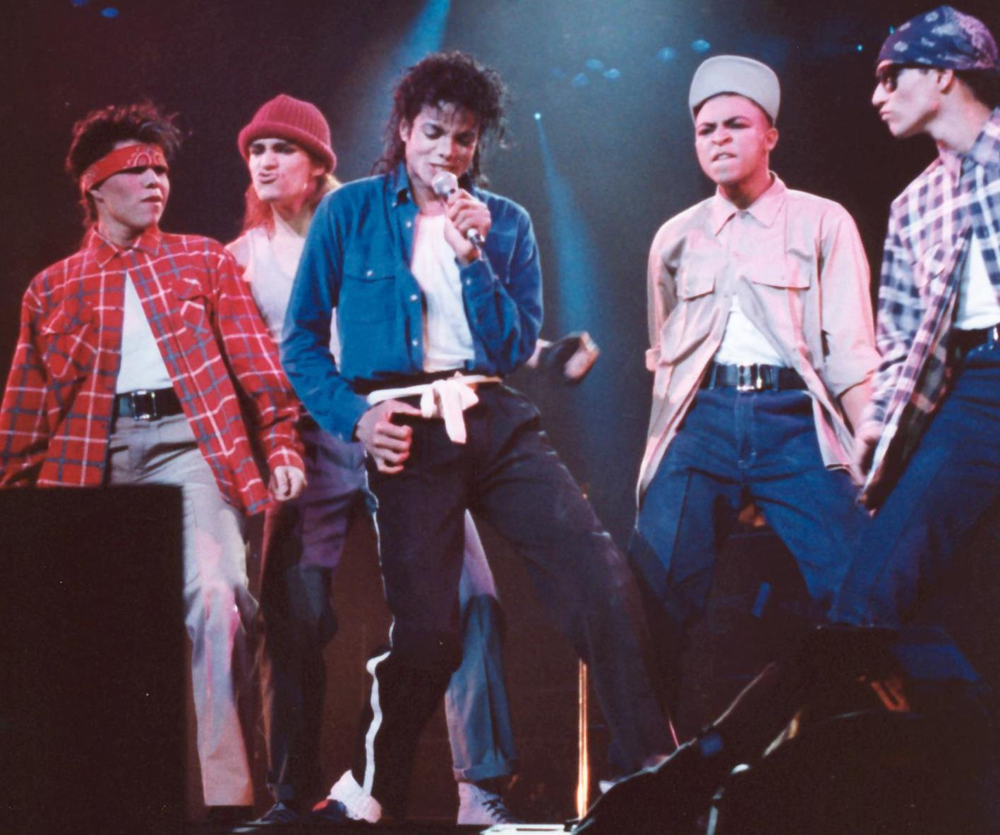

Главная страницаПрародитель всей современной музыкиСамые популярные жанры музыки |
Песни строятся по консервативной схеме куплет + припев. От поп-песни требуются простые, лёгкие для восприятия мелодии. Основной инструмент в поп-музыке — человеческий голос. Аккомпанементу уделяется второстепенная роль: аккомпанирующие поп-музыканты не играют соло и чаще всего не являются ни авторами песен, ни лидерами групп. Важную роль в поп-музыке играет ритмическая структура: многие поп-песни пишутся для танцев и имеют чёткий, неизменный бит.
